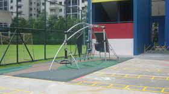

School Campus

School Church
Officially established in 2002
The canteen sells food like Chinese Rice, Chinese noodles, Western food, Malay noodles, Chinese and Malay snacks. It also have vending machines that sell drinks like Milo, Chocolate Milk, Strawberry Milk, Green Tea and Bottled water.

School Playground
Officially established in 2002
The playground is where most Primary 1 students usually play, after the field. The playground has a tire, mini climbing walls for students to climb, but can be very dangerous. Therefore after a student's fall that broke his arm, the schol has renovated the playground to be safer for students to play.